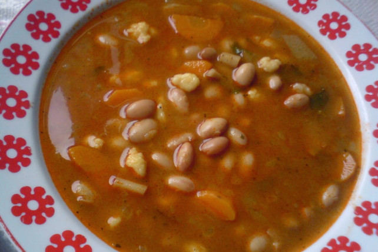

Bableves

Leírás
Fejtett bableves csipetkével
Hozzávalók
- 50dkg fejtett bab
- 1 szál sárgarépa
- 1 szál petrezselyem
- 1db zeller
- petrezselyemzöld
- zellerzöld
- 1ek zsír
- 1 fej hagyma
- 2ek liszt
- 2ek liszt
- 2tk pirospaprika
- 1db tojás
- 2ek víz
- liszt
- só
- bors
Elkészítés
-
A fejtett bableves elkészítéséhez a babot feltesszük főni a
feldarabolt zöldségekkel együtt. A petrezselyem- és zellerzöldeket
összekötjük, és azt is beletesszük a levesbe. Ízlés szerint sózzuk.
-
Amikor már minden zöldség puha, és a bab is megfőtt, a zsírból, a
felkockázott hagymából és a lisztből hagymás rántást készítünk.
Amikor már világosbarna, a tűzről lehúzva hozzáadjuk a
pirospaprikát, hideg vízzel felengedjük és a levesre öntjük.
Összeforraljuk, borsozzuk és ha szükséges, sóval ízesítjük.
-
A tojást annyi liszttel és egy kis sóvel összekeverjük, hogy kemény,
csipegethető tésztát kapjunk. Lisztezett tálcára csipegetjük.
-
A csipetkét beletehetjük a levesbe is (5 perc alatt megfő), de
kifőzhetjük külön is, és amikor puha, belekeverjük a levesbe, majd
hagyjuk állni még 10 percig.
-
A bablevest forrón tányérokba szedjük, friss kenyeret kínálhatunk hozzá.